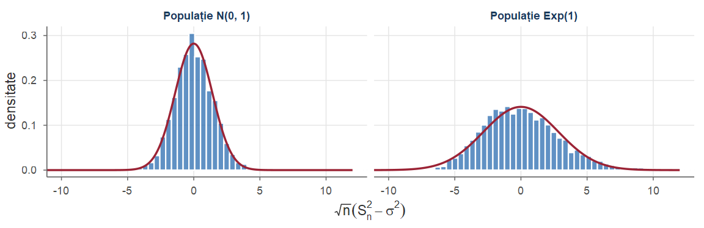
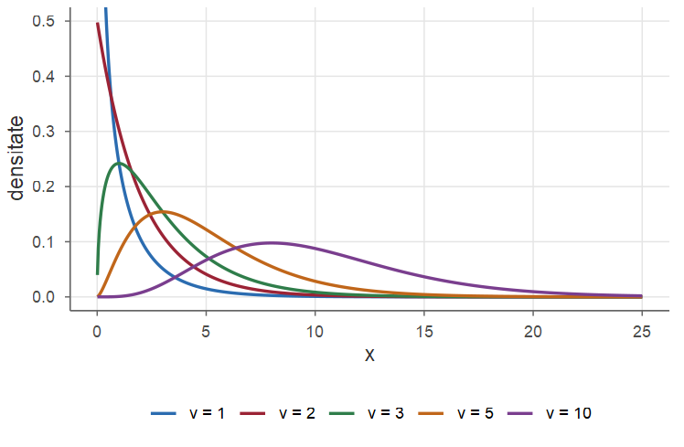
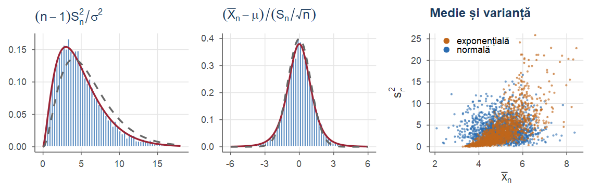
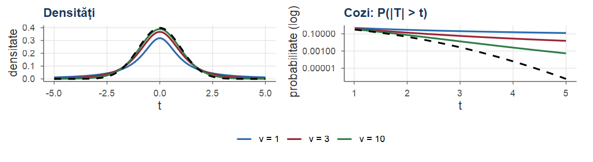
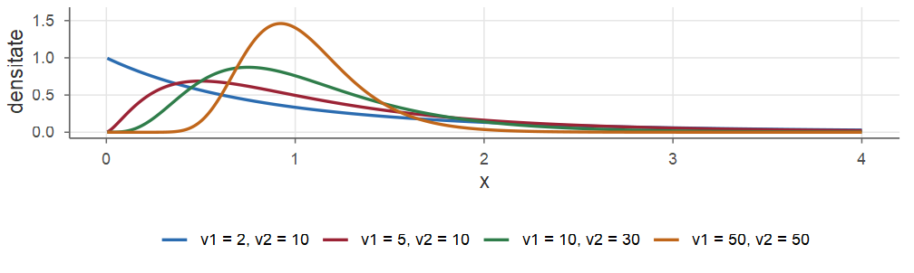

Statistică · Cursul 5
Universitatea din București · Facultatea de Matematică și Informatică · 2026–2027
Pentru inferență avem nevoie de repartițiile de eșantionare ale statisticilor (Cursul 2): ele descriu cum variază o statistică de la un eșantion la altul. Azi studiem media \(\Xbar\) și varianța \(S_n^2\): întâi momentele lor, pentru o populație oarecare; apoi repartițiile lor exacte, pentru orice \(n\), când populația este normală.
Obiectivele
Temele: media și varianța eșantionului · Gamma și \(\chi^2\) · teorema lui Fisher · Student și Fisher–Snedecor · exerciții rezolvate.
\(X_1,\dots,X_n\): eșantion (Definiția 8 din Cursul 2); statistică (Definiția 11 din Cursul 2); \(\mu=\E[X_1]\), \(\sigma^2=\Var(X_1)\), \(\mu_k=\E[(X_1-\mu)^k]\).
În R: d..., p..., q..., r...; cuantilele sunt inferioare: \(z_p\) = qnorm(p), \(\chi^2_{\nu,p}\) = qchisq(p, nu), \(t_{\nu,p}\) = qt(p, nu), \(F_{\nu_1,\nu_2,p}\) = qf(p, nu1, nu2).
Populație oarecare, cu media \(\mu\) și varianța \(\sigma^2<\infty\) (Casella and Berger 2002, secț. 5.2).
Se numește media eșantionului (sau media empirică) statistica \(\ \Xbar=\frac1n\sum_{i=1}^nX_i\). Valoarea ei pe o realizare \(x_1,\dots,x_n\) se notează \(\bar x_n\).
Fie \(X_1,\dots,X_n\) un eșantion dintr-o populație cu media \(\mu\) și varianța \(\sigma^2<\infty\). Atunci:
\(\E[\Xbar]=\mu\) și \(\Var(\Xbar)=\dfrac{\sigma^2}{n}\);
\(\Xbar\asto\mu\) și \(\sqrt n\,(\Xbar-\mu)\dto\Norm(0,\sigma^2)\) când \(n\to\infty\).
\(\sigma/\sqrt n\) = eroarea standard: pentru a o înjumătăți, cvadruplăm \(n\); din (b), \(\Xbar\approx\Norm(\mu,\sigma^2/n)\).
Demonstrație.
Varianța. \(\Var\big(\sum_iX_i\big)=\sum_i\Var(X_i)+2\sum_{i<j}\Cov(X_i,X_j)\) (Propoziția 42(c) din Cursul 1); pentru \(i\ne j\), \(\Cov(X_i,X_j)=0\) (Propoziția 42(d) din Cursul 1); cu \(\Var(cY)=c^2\Var(Y)\) (Propoziția 25(b) din Cursul 1), \[ \Var(\Xbar)=\frac1{n^2}\Big(\sum_{i=1}^n\underbrace{\Var(X_i)}_{=\sigma^2}+2\sum_{i<j}\underbrace{\Cov(X_i,X_j)}_{=0}\Big)=\frac{n\sigma^2}{n^2}=\frac{\sigma^2}{n} \]
■
Fie \(X_1,\dots,X_n\) un eșantion din \(\Bern(\theta)\); \(\Xbar\) este proporția de succese. Cum \(X_1^2=X_1\): \(\E[X_1]=\E[X_1^2]=\theta\) și \(\sigma^2=\theta-\theta^2=\theta(1-\theta)\). Din Propoziția 2(a), \(\E[\Xbar]=\theta\), \(\Var(\Xbar)=\frac{\theta(1-\theta)}{n}\): pentru \(\theta=0.3\), \(n=100\), abaterea standard este \(\sqrt{0.0021}\approx0.0458\), iar pentru \(n=400\) se înjumătățește (\(\approx0.0229\)).
O probabilitate. Exact, \(n\Xbar\sim\Bin(100,0.3)\) (Propoziția 12(a) din Cursul 2): \(\PP(\Xbar\le0.25)=\PP\big(\Bin(100,0.3)\le25\big)\approx0.1631\). Aproximarea normală, \(\Xbar\approx\Norm(0.3,\,0.0021)\), dă \[ \PP(\Xbar\le0.25)\approx\Phi\Big(\frac{0.25-0.3}{0.0458}\Big)=\Phi(-1.091)\approx0.1376 . \] Un eșantion din șase subestimează proporția cu cel puțin \(5\) puncte procentuale; aproximarea normală nu este foarte precisă aici (Cursul 12).
O populație are abaterea standard \(\sigma=10\). Cât de mare trebuie să fie \(n\) pentru ca media eșantionului să difere de \(\mu\) cu cel mult \(1\), cu probabilitatea (aproximativ) \(0.95\)?
Aproximarea normală. \(Z=\sqrt n(\Xbar-\mu)/\sigma\approx\Norm(0,1)\) (Propoziția 2(b)); înmulțind cu \(\sqrt n/10\) și folosind \(\PP(|Z|\le a)=2\Phi(a)-1\), \[ \PP\big(|\Xbar-\mu|\le1\big)\approx2\Phi\Big(\frac{\sqrt n}{10}\Big)-1\ge0.95\iff\Phi\Big(\frac{\sqrt n}{10}\Big)\ge0.975\iff\frac{\sqrt n}{10}\ge z_{0.975}\approx1.96, \] adică \(\sqrt n\ge19.6\), \(n\ge384.16\): sunt necesare \(n=385\) de observații.
Cebîșev (Propoziția 26(b) din Cursul 1, fără nicio informație despre forma repartiției): \(\PP(|\Xbar-\mu|>1)\le\PP(|\Xbar-\mu|\ge1)\le\frac{\Var(\Xbar)}{1^2}=\frac{100}{n}\le0.05\) cere \(n\ge2000\).
Pentru o populație exponențială de medie \(10\) (deci \(\sigma=10\)), \(n=385\) asigură o probabilitate apropiată de \(0.95\):
n_normal <- ceiling((qnorm(0.975) * 10 / 1)^2) # din aproximarea normală
n_cebisev <- 100 / 0.05 # din inegalitatea Cebîșev
set.seed(1)
xbar <- colMeans(matrix(rexp(385 * 20000, rate = 1 / 10), nrow = 385))
c(n_normal = n_normal, n_cebisev = n_cebisev,
P_simulat = mean(abs(xbar - 10) <= 1)) # aproape 0.95
#> n_normal n_cebisev P_simulat
#> 385.00 2000.00 0.95Cum \(\sigma^2=\E[(X-\mu)^2]\), un estimator natural ar fi \(\frac1n\sum_i(X_i-\mu)^2\); media \(\mu\) fiind de regulă necunoscută, o înlocuim cu \(\Xbar\).
Se numește varianța empirică statistica \(\ V_n^2=\frac1n\sum_{i=1}^n\big(X_i-\Xbar\big)^2\), iar varianța eșantionului statistica \[
S_n^2=\frac1{n-1}\sum_{i=1}^n\big(X_i-\Xbar\big)^2=\frac{n}{n-1}V_n^2,\qquad n\ge2 .
\] Rădăcinile pătrate \(V_n\) și \(S_n\) se numesc abaterea standard empirică, respectiv abaterea standard a eșantionului. În R, var(x) și sd(x) calculează \(s_n^2\) și \(s_n\) (cu factorul \(\frac1{n-1}\)).
Vom vedea imediat de ce se preferă factorul \(\frac1{n-1}\). Identitatea algebrică următoare este folosită în mod repetat în acest curs.
Pentru orice numere reale \(x_1,\dots,x_n\) și orice \(a\in\R\), \(\ \sum_{i=1}^n(x_i-a)^2=\sum_{i=1}^n(x_i-\bar x_n)^2+n(\bar x_n-a)^2 .\) În particular, \(\sum_i(x_i-\bar x_n)^2=\sum_ix_i^2-n\bar x_n^2\), iar funcția \(a\mapsto\sum_i(x_i-a)^2\) își atinge minimul (unic) în \(a=\bar x_n\).
Demonstrație. Scriem \(x_i-a=(x_i-\bar x_n)+(\bar x_n-a)\), ridicăm la pătrat și sumăm; factorul \(\bar x_n-a\) nu depinde de \(i\): \[ \sum_{i=1}^n(x_i-a)^2=\sum_{i=1}^n(x_i-\bar x_n)^2+2(\bar x_n-a)\sum_{i=1}^n(x_i-\bar x_n)+n(\bar x_n-a)^2 . \] Termenul din mijloc este nul, deoarece abaterile de la medie au suma zero: \(\sum_i(x_i-\bar x_n)=n\bar x_n-n\bar x_n=0\). Pentru \(a=0\) obținem a doua formulă. În membrul drept, primul termen nu depinde de \(a\), iar \(n(\bar x_n-a)^2\ge0\) se anulează numai pentru \(a=\bar x_n\).■
Fie \(x=(2,\,4,\,4,\,5,\,7,\,8)\), \(n=6\). Media: \(\bar x_6=\frac{30}6=5\). Abaterile \(x_i-\bar x_6\): \(-3,-1,-1,0,2,3\) (suma \(0\)); pătratele: \(9,1,1,0,4,9\), cu suma \(24\). Deci \[ v_6^2=\frac{24}{6}=4,\qquad s_6^2=\frac{24}{5}=4.8,\qquad s_6=\sqrt{4.8}\approx2.191 . \] Verificarea Lemei 4. Cu \(a=0\): \(\sum_ix_i^2=174\) și \(174-6\cdot5^2=24\) („suma pătratelor minus \(n\) ori pătratul mediei”, comodă de mână). Cu \(a=4\): \(\sum_i(x_i-4)^2=4+0+0+1+9+16=30=24+6\,(5-4)^2\). Orice alt \(a\) dă o sumă mai mare decât \(24\), valoarea pentru \(a=\bar x_6=5\).
Din lemă, cu \(a=0\) și cu \(a=\mu\), împărțind la \(n\): \[ V_n^2=\frac1n\sum_{i=1}^nX_i^2-\Xbar^2=\frac1n\sum_{i=1}^n(X_i-\mu)^2-(\Xbar-\mu)^2 .\qquad(\ast) \]
Fie \(X_1,\dots,X_n\), \(n\ge2\), un eșantion dintr-o populație cu media \(\mu\) și varianța \(\sigma^2<\infty\). Atunci \(\ \E\big[V_n^2\big]=\frac{n-1}{n}\,\sigma^2\ \) și \(\ \E\big[S_n^2\big]=\sigma^2 .\)
Demonstrație. Din a doua reprezentare \((\ast)\) (variabile integrabile, \(\E[X_i]=\E[\Xbar]=\mu\)) și Propoziția 2(a): \(\ \E\big[V_n^2\big]=\frac1n\sum_{i=1}^n\Var(X_i)-\Var(\Xbar)=\sigma^2-\frac{\sigma^2}{n}=\frac{n-1}{n}\,\sigma^2\); din \(S_n^2=\frac{n}{n-1}V_n^2\) și liniaritate, \(\E[S_n^2]=\sigma^2\).■
Nedeplasarea nu se conservă prin transformări neliniare: deși \(\E[S_n^2]=\sigma^2\), \(\ 0\le\Var(S_n)=\sigma^2-\big(\E[S_n]\big)^2\), deci \(\E[S_n]\le\sigma\), cu egalitate dacă și numai dacă \(S_n\) este constantă a.s.: \(S_n\) subestimează în medie \(\sigma\) (pentru populații normale: Corolarul 17).
set.seed(2) # n = 4, Unif(0, 1), sigma^2 = 1/12
X <- matrix(runif(4 * 1e5), ncol = 4) # 1e5 eșantioane de volum 4
s2 <- apply(X, 1, var) # varianțele eșantioanelor
c(E_S2 = mean(s2), E_V2 = mean(s2 * 3 / 4), # V_n^2 = (n-1)/n * S_n^2
sigma2 = 1 / 12, teoretic_V2 = 3 / 4 / 12)
#> E_S2 E_V2 sigma2 teoretic_V2
#> 0.08350 0.06263 0.08333 0.06250Media lui \(S_n^2\) nu spune cât de precis este acest estimator; pentru \(n\) fixat calculăm exact varianța lui și covarianța cu \(\Xbar\), în funcție de momentele centrate \(\mu_3\), \(\mu_4\).
Principiul de calcul. Dacă \(Z_1,\dots,Z_n\) sunt independente și centrate, media unui produs de variabile \(Z\) în care un indice apare exact o dată este nulă: factorul respectiv este independent de produsul celorlalți și are media \(0\) (Propoziția 40 din Cursul 1).
Fie \(X_1,\dots,X_n\), \(n\ge2\), un eșantion dintr-o populație cu varianța \(\sigma^2\) și momentul centrat de ordinul 4 \(\mu_4<\infty\). Atunci \[ \Var\big(S_n^2\big)=\frac1n\Big(\mu_4-\frac{n-3}{n-1}\,\sigma^4\Big). \]
Demonstrație. Pasul 1: reducerea. \(Z_i=X_i-\mu\) sunt i.i.d., cu \(\E[Z_i]=0\), \(\E[Z_i^2]=\sigma^2\), \(\E[Z_i^3]=\mu_3\) (există: \(|z|^3\le1+z^4\)), \(\E[Z_i^4]=\mu_4\); produsele de cel mult patru variabile \(Z\) sunt integrabile (inegalitatea mediilor). Cum \(X_i-\Xbar=Z_i-\bar Z_n\), din Lema 4 (\(a=0\)), cu \(A=\sum_iZ_i^2\), \(B=\sum_{i<j}Z_iZ_j\): \[ (n-1)S_n^2=\sum_{i=1}^nZ_i^2-\frac1n\Big(\sum_{i=1}^nZ_i\Big)^2=A-\frac1n\big(A+2B\big)=\frac{n-1}{n}\,A-\frac2n\,B .\qquad(\ast\ast) \] Pasul 2. \(Z_1^2,\dots,Z_n^2\) sunt independente (Propoziția 39 din Cursul 1): \(\Var(A)=n\big(\E[Z_1^4]-(\E[Z_1^2])^2\big)=n\big(\mu_4-\sigma^4\big)\).
Pasul 3. \(\E[B]=0\) și \(\Var(B)=\E[B^2]=\sum_{i<j}\sum_{k<l}\E\big[Z_iZ_jZ_kZ_l\big]\). Pentru \((i,j)=(k,l)\) termenul este \(\E[Z_i^2]\E[Z_j^2]=\sigma^4\). Pentru \((i,j)\ne(k,l)\), una dintre mulțimile \(\{i,j\}\), \(\{k,l\}\) conține un indice \(m\) absent din cealaltă; cum \(i\ne j\), \(k\ne l\), \(m\) apare exact o dată: termen nul. Rămân \(\binom n2\) termeni: \(\Var(B)=\frac{n(n-1)}{2}\,\sigma^4\).■
Demonstrație (continuare). Pasul 4: \(\Cov(A,B)=0\). \(\Cov(A,B)=\E[AB]=\sum_{k}\sum_{i<j}\E\big[Z_k^2Z_iZ_j\big]\): dacă \(k\notin\{i,j\}\), termenul este \(\E[Z_k^2]\E[Z_i]\E[Z_j]=0\); dacă \(k=i\), el este \(\E[Z_i^3]\E[Z_j]=0\); dacă \(k=j\), \(\E[Z_i]\E[Z_j^3]=0\).
Pasul 5: asamblarea. Din \((\ast\ast)\) și \(\Var(aA+bB)=a^2\Var(A)+b^2\Var(B)+2ab\Cov(A,B)\) (Propoziția 42(b) din Cursul 1), \[ (n-1)^2\Var\big(S_n^2\big)=\Big(\frac{n-1}{n}\Big)^2n\big(\mu_4-\sigma^4\big)+\frac{4}{n^2}\cdot\frac{n(n-1)}2\,\sigma^4 =\frac{(n-1)^2}{n}\big(\mu_4-\sigma^4\big)+\frac{2(n-1)}{n}\,\sigma^4 . \] Împărțind la \((n-1)^2\) și folosind \(1-\frac{2}{n-1}=\frac{n-3}{n-1}\): \(\ \Var(S_n^2)=\frac{\mu_4-\sigma^4}{n}+\frac{2\sigma^4}{n(n-1)}=\frac1n\Big(\mu_4-\frac{n-3}{n-1}\sigma^4\Big)\).■
Populație normală: \(X_1=\mu+\sigma Z\), deci \(\mu_4=\sigma^4\E[Z^4]=3\sigma^4\) (Exemplul 23 din Cursul 1; Propoziția 13(ii)) și \[ \Var(S_n^2)=\frac1n\Big(3-\frac{n-3}{n-1}\Big)\sigma^4=\frac1n\cdot\frac{3(n-1)-(n-3)}{n-1}\,\sigma^4=\frac{2\sigma^4}{n-1} \] — regăsit, pe altă cale, din teorema lui Fisher.
Fie \(X_1,\dots,X_n\), \(n\ge2\), un eșantion dintr-o populație cu momentul centrat de ordinul 3 \(\mu_3\) finit. Atunci \(\ \Cov\big(\Xbar,S_n^2\big)=\dfrac{\mu_3}{n}\). În particular, pentru populații simetrice (\(\mu_3=0\)), \(\Xbar\) și \(S_n^2\) sunt necorelate.
Demonstrație. Pasul 1. \(\Xbar-\mu=\bar Z_n\), \(\E[\bar Z_n]=0\), \((n-1)S_n^2=\sum_iZ_i^2-n\bar Z_n^2\), iar covarianța nu se schimbă adunând o constantă la \(\Xbar\): \[ (n-1)\Cov(\Xbar,S_n^2)=\E\Big[\bar Z_n\Big(\sum_{i=1}^nZ_i^2-n\bar Z_n^2\Big)\Big]=\E\Big[\bar Z_n\sum_{i=1}^nZ_i^2\Big]-n\,\E\big[\bar Z_n^3\big]. \] Pasul 2. \(\E\big[\bar Z_n\sum_iZ_i^2\big]=\frac1n\sum_{j,i}\E\big[Z_jZ_i^2\big]\): termenii cu \(j\ne i\) sunt nuli, cei \(n\) cu \(j=i\) valorează \(\mu_3\); total \(\mu_3\).
Pasul 3. \(\E\big[\bar Z_n^3\big]=\frac1{n^3}\sum_{i,j,k}\E\big[Z_iZ_jZ_k\big]\): dacă indicii nu sunt toți egali, unul apare exact o dată; rămân \(n\) termeni: \(\E[\bar Z_n^3]=\frac{\mu_3}{n^2}\).
Pasul 4. \((n-1)\Cov(\Xbar,S_n^2)=\mu_3-n\cdot\frac{\mu_3}{n^2}=\frac{(n-1)\mu_3}{n}\); împărțim la \(n-1\).■
Covarianța tinde la \(0\), dar la fel și varianțele; cu \(\gamma_1=\mu_3/\sigma^3\) (asimetria) și \(\gamma_2=\mu_4/\sigma^4-3\) (excesul), \[ \Corr(\Xbar,S_n^2)=\frac{\mu_3/n}{\sqrt{\dfrac{\sigma^2}{n}\cdot\dfrac1n\Big(\mu_4-\dfrac{n-3}{n-1}\sigma^4\Big)}} =\frac{\mu_3}{\sigma\sqrt{\mu_4-\frac{n-3}{n-1}\sigma^4}}\ \xrightarrow[n\to\infty]{}\ \frac{\gamma_1}{\sqrt{\gamma_2+2}}, \] care nu tinde la \(0\) pentru populațiile asimetrice (presupunem \(\mu_4>\sigma^4\)).
Fie \(X_1,\dots,X_n\) un eșantion din \(\Exp(1)\), cu \(\mu=\sigma^2=1\). Calculăm \(\mu_3\), \(\mu_4\) și aplicăm Propozițiile 6 și 7 pentru \(n=10\).
Momentele. \(\Exp(1)=\GammaD(1,1)\), deci \(m_k=\E[X^k]=k!\) (Exemplul 16 din Cursul 1; Propoziția 10(i)). Din binomul lui Newton și liniaritate, \[ \mu_3=m_3-3m_2+3m_1-1=2,\qquad\mu_4=m_4-4m_3+6m_2-4m_1+1=9; \] \(\gamma_1=2\), \(\gamma_2=6\): repartiție puternic asimetrică, cu cozi mai grele decât normala.
Pentru \(n=10\), \(\frac{n-3}{n-1}=\frac79\): \[ \Var(S_{10}^2)=\frac1{10}\Big(9-\frac79\Big)=\frac{37}{45}\approx0.8222,\qquad\Cov(\bar X_{10},S_{10}^2)=\frac{2}{10}=0.2, \] iar \(\Corr(\bar X_{10},S_{10}^2)=0.2/\sqrt{0.1\cdot37/45}\approx0.6975\) (limita: \(2/\sqrt8\approx0.707\)). Pentru o normală cu aceeași varianță: \(\Var(S_{10}^2)=2/9\approx0.2222\) (de \(3.7\) ori mai puțin) și corelația \(0\).
\(50\,000\) de eșantioane de volum \(10\) din \(\Exp(1)\):
set.seed(11)
n <- 10; B <- 50000
X <- matrix(rexp(n * B, rate = 1), nrow = B) # câte un eșantion pe linie
m <- rowMeans(X); s2 <- apply(X, 1, var)
c(E_S2 = mean(s2), Var_S2 = var(s2), teoretic = 37 / 45,
Cov = cov(m, s2), teoretic = 0.2,
Corr = cor(m, s2), teoretic = 0.2 / sqrt(0.1 * 37 / 45))
#> E_S2 Var_S2 teoretic Cov teoretic Corr teoretic
#> 0.9951 0.8258 0.8222 0.2013 0.2000 0.6987 0.6975Valorile simulate confirmă \(\E[S_{10}^2]=1\), \(\Var(S_{10}^2)=37/45\), \(\Cov=0.2\) și corelația \(\approx0.70\): varianța eșantionului este mult mai instabilă decât pentru o populație normală.
\(S_n^2\) se comportă ca \(\Xbar\) (Propoziția 2(b)): consistentă și asimptotic normală.
Fie \(X_1,X_2,\dots\) i.i.d. cu media \(\mu\) și varianța \(\sigma^2<\infty\). Atunci \(V_n^2\asto\sigma^2\) și \(S_n^2\asto\sigma^2\). Dacă, în plus, \(\mu_4<\infty\), atunci \[ \sqrt n\big(V_n^2-\sigma^2\big)\dto\Norm(0,v^2)\qquad\text{și}\qquad\sqrt n\big(S_n^2-\sigma^2\big)\dto\Norm(0,v^2),\qquad v^2=\mu_4-\sigma^4 . \]
Demonstrație. Pasul 1: consistența. \(V_n^2=\frac1n\sum_iX_i^2-\Xbar^2\) din \((\ast)\); LNM tare pentru \((X_i^2)\) (i.i.d., \(\E[X_1^2]=\sigma^2+\mu^2<\infty\)) și pentru \((X_i)\), apoi Teorema 57(a) din Cursul 1 cu \(g(x)=x^2\): \(V_n^2\asto\sigma^2+\mu^2-\mu^2=\sigma^2\); \(S_n^2=\frac n{n-1}V_n^2\asto\sigma^2\).
Pasul 2: descompunerea. Cu \(Z_i=X_i-\mu\) (\(Z_i^2\) i.i.d., media \(\sigma^2\), varianța \(\mu_4-\sigma^4=v^2\)), din \((\ast)\): \[ \sqrt n\big(V_n^2-\sigma^2\big)=\underbrace{\sqrt n\Big(\frac1n\sum_{i=1}^nZ_i^2-\sigma^2\Big)}_{A_n}-\underbrace{\sqrt n\,\bar Z_n^2}_{B_n}. \] Pasul 3. \(A_n\dto\Norm(0,v^2)\): Propoziția 2(b) pentru „populația” pătratelor \(Z_i^2\).
Pasul 4: \(B_n\pto0\) (cu lema lui Slutsky). \(B_n=\bar Z_n\cdot\sqrt n\,\bar Z_n\), cu \(\bar Z_n\pto0\) și \(\sqrt n\,\bar Z_n\dto\Norm(0,\sigma^2)\); din Teorema 58(b) din Cursul 1, \(B_n\dto0\), deci \(B_n\pto0\) (Teorema 56(d) din Cursul 1, limită constantă).
Pasul 5. Din Slutsky (a), \(\sqrt n(V_n^2-\sigma^2)=A_n-B_n\dto\Norm(0,v^2)\). Apoi \(\sqrt n(S_n^2-\sigma^2)=\sqrt n(V_n^2-\sigma^2)+\frac{\sqrt n}{n-1}V_n^2\), iar ultimul termen \(\pto0\) (\(V_n^2\pto\sigma^2\), \(\frac{\sqrt n}{n-1}\to0\); Slutsky (b) și Teorema 56(d) din Cursul 1); din nou Slutsky (a).■
Fie \(n=100\), \(\sigma^2=1\); estimăm \(\PP\big(|S_{100}^2-1|>0.2\big)\) pentru o populație normală și una exponențială. Din Propoziția 8, \(\sqrt n(S_n^2-\sigma^2)/v\approx\Norm(0,1)\); înmulțind cu \(10/v\), \[ \PP\big(|S_{100}^2-1|>0.2\big)=\PP\Big(\frac{\sqrt{100}\,|S_{100}^2-1|}{v}>\frac{2}{v}\Big)\approx2\Big(1-\Phi\Big(\frac2v\Big)\Big). \] \(\Norm(0,1)\): \(\mu_4=3\), \(v^2=2\), \(2/v=1.414\): \(\approx0.157\). \(\Exp(1)\): \(\mu_4=9\) (Exemplul 4), \(v^2=8\), \(2/v=0.707\): \(\approx0.480\) — de trei ori mai des.

\(\sqrt n(S_n^2-\sigma^2)\) pentru \(n=400\) (\(5000\) de eșantioane) și densitățile limită \(\Norm(0,\mu_4-\sigma^4)\): \(v^2=2\) (normală), \(v^2=8\) (exponențială); ambele populații au \(\sigma^2=1\).
Densitățile derivate din repartiția normală se exprimă prin funcția Gamma a lui Euler, iar calculele se fac cel mai simplu cu f.g.m. (Knight 2000, secț. 2.4). Reamintim (Cursul 1): \(\Gamma(a)=\int_0^\infty t^{a-1}e^{-t}\dd t\), \(a>0\).
Spunem că variabila aleatoare \(X\) are repartiția Gamma de parametri \(\alpha>0\) (parametru de formă) și \(\lambda>0\) (parametru de scală inversă, rate) și scriem \(X\sim\GammaD(\alpha,\lambda)\) dacă \(X\) are densitatea \[
f(x)=\frac{\lambda^\alpha}{\Gamma(\alpha)}x^{\alpha-1}e^{-\lambda x},\qquad x>0 .
\] Pentru \(\alpha=1\) regăsim repartiția exponențială: \(\GammaD(1,\lambda)=\Exp(\lambda)\). În R: dgamma(x, shape = alpha, rate = lambda).
Integrala Gamma (în definiția lui \(\Gamma\) facem \(t=\theta x\), \(\dd x=\dd t/\theta\)): \[ \int_0^\infty x^{\beta-1}e^{-\theta x}\dd x=\frac{\Gamma(\beta)}{\theta^\beta},\qquad\beta>0,\ \theta>0 .\qquad(\Gamma) \] Cu \(\beta=\alpha\), \(\theta=\lambda\): \(\int_0^\infty f=1\). Instrumentul principal al calculelor din acest curs: un integrand „putere \(\times\) exponențială” este o densitate Gamma nenormată.
Fie \(X\sim\GammaD(\alpha,\lambda)\). Atunci:
pentru orice \(r>-\alpha\), \(\E[X^r]=\dfrac{\Gamma(\alpha+r)}{\Gamma(\alpha)\,\lambda^r}\), iar pentru \(r\le-\alpha\), \(\E[X^r]=\infty\); în particular \(\E[X]=\dfrac\alpha\lambda\), \(\Var(X)=\dfrac\alpha{\lambda^2}\) și, pentru \(\alpha>1\), \(\E[1/X]=\dfrac{\lambda}{\alpha-1}\);
\(M_X(t)=\Big(1-\dfrac t\lambda\Big)^{-\alpha}\) pentru \(t<\lambda\) și \(M_X(t)=\infty\) pentru \(t\ge\lambda\);
pentru \(c>0\), \(cX\sim\GammaD(\alpha,\lambda/c)\);
(aditivitate) dacă \(X_i\sim\GammaD(\alpha_i,\lambda)\), \(i=1,\dots,k\), sunt independente, atunci \(\sum_{i=1}^kX_i\sim\GammaD\big(\sum_{i=1}^k\alpha_i,\lambda\big)\).
Demonstrație.
Cazurile particulare, din \(\Gamma(a+1)=a\Gamma(a)\): \(\E[X]=\frac{\alpha\Gamma(\alpha)}{\Gamma(\alpha)\lambda}=\frac\alpha\lambda\); \(\E[X^2]=\frac{(\alpha+1)\alpha}{\lambda^2}\), deci \(\Var(X)=\frac{\alpha^2+\alpha-\alpha^2}{\lambda^2}=\frac\alpha{\lambda^2}\); pentru \(\alpha>1\), \(\E[X^{-1}]=\frac{\Gamma(\alpha-1)\,\lambda}{(\alpha-1)\Gamma(\alpha-1)}=\frac{\lambda}{\alpha-1}\).
Observăm \(\E[1/X]=\frac\lambda{\alpha-1}>\frac\lambda\alpha=1/\E[X]\), în acord cu inegalitatea lui Jensen (Propoziția 28 din Cursul 1) pentru funcția convexă \(x\mapsto1/x\).■
Demonstrație (continuare).
Pentru \(t<\lambda\), din \((\Gamma)\) cu \(\beta=\alpha\), \(\theta=\lambda-t>0\): \(\ M_X(t)=\frac{\lambda^\alpha}{\Gamma(\alpha)}\int_0^\infty x^{\alpha-1}e^{-(\lambda-t)x}\dd x=\Big(\frac{\lambda}{\lambda-t}\Big)^{\alpha}=\Big(1-\frac t\lambda\Big)^{-\alpha}\); pentru \(t\ge\lambda\), \(e^{tx}f(x)\ge\frac{\lambda^\alpha}{\Gamma(\alpha)}x^{\alpha-1}\), neintegrabilă pe \((1,\infty)\) (Exemplul 21 din Cursul 1).
Din Propoziția 46(a) din Cursul 1, \(M_{cX}(t)=M_X(ct)=\big(1-\frac{t}{\lambda/c}\big)^{-\alpha}\) pentru \(t<\lambda/c\): f.g.m. a repartiției \(\GammaD(\alpha,\lambda/c)\), finită pe \((-\lambda/c,\lambda/c)\); din unicitate (Teorema 33 din Cursul 1), \(cX\sim\GammaD(\alpha,\lambda/c)\). (Sau direct: densitatea lui \(cX\) este \(\frac1cf(\frac xc)\), Propoziția 18(a) din Cursul 1.)
Din independență și Propoziția 46(b) din Cursul 1, pentru \(t<\lambda\), \(M_{\sum_iX_i}(t)=\prod_{i=1}^k\big(1-\frac t\lambda\big)^{-\alpha_i}=\big(1-\frac t\lambda\big)^{-\sum_i\alpha_i}\): f.g.m. a repartiției \(\GammaD(\sum_i\alpha_i,\lambda)\); unicitatea (Exemplul 31 din Cursul 1).
■
Esențial în (iv): același \(\lambda\); din (iii), \(\lambda\) este un parametru de scală. Eșantion \(\Exp(\lambda)\): \(2\lambda\sum_iX_i\sim\GammaD(n,\frac12)\) (\(=\chisq{2n}\)).
Intervalele dintre sosirile clienților la un ghișeu sunt v.a. independente \(\Exp(2)\) (în medie doi clienți pe oră); \(X=T_1+T_2+T_3\) este momentul sosirii celui de-al treilea client.
Repartiția. Din Propoziția 10(iv), \(X\sim\GammaD(3,2)\), cu densitatea \(f(x)=\frac{2^3}{\Gamma(3)}x^2e^{-2x}=4x^2e^{-2x}\), \(x>0\). Momentele (Propoziția 10(i)): \(\E[X]=1.5\) ore, \(\Var(X)=\frac34\), \(\E[1/X]=\frac{2}{3-1}=1>1/\E[X]\approx0.667\).
O probabilitate. Integrând de două ori prin părți (\(u=t^2\), apoi \(u=t\)), \[ \PP(X>x)=\int_x^\infty4t^2e^{-2t}\dd t=2x^2e^{-2x}+\int_x^\infty4te^{-2t}\dd t=e^{-2x}\big(2x^2+2x+1\big). \] Pentru \(x=2\): \(\PP(X>2)=13e^{-4}\approx0.2381\) (aproape un sfert din zile). Cu (iii): \(4X\sim\GammaD(3,\frac12)=\chisq6\), deci \(\PP(X>2)=\PP(\chisq6>8)\).
Dacă \(Z\sim\Norm(0,1)\), atunci \(Z^2\) are densitatea \(\ f_{Z^2}(y)=\dfrac{1}{\sqrt{2\pi y}}\,e^{-y/2}=\dfrac{(1/2)^{1/2}}{\Gamma(1/2)}\,y^{1/2-1}e^{-y/2}\), \(y>0\), adică \(Z^2\sim\GammaD\big(\tfrac12,\tfrac12\big)\), iar \(M_{Z^2}(t)=(1-2t)^{-1/2}\) pentru \(t<\frac12\).
Demonstrație. Prin f.g.m. Pentru \(t<\frac12\), \(tz^2-\frac{z^2}2=-\frac{(1-2t)z^2}{2}\); recunoaștem densitatea \(\Norm\big(0,\frac1{1-2t}\big)\), cu integrala \(1\): \[ M_{Z^2}(t)=\int_{-\infty}^\infty e^{tz^2}\frac{e^{-z^2/2}}{\sqrt{2\pi}}\dd z=\frac{1}{\sqrt{1-2t}}\int_{-\infty}^\infty\frac{\sqrt{1-2t}}{\sqrt{2\pi}}e^{-\frac{(1-2t)z^2}{2}}\dd z=(1-2t)^{-1/2}; \] pentru \(t\ge\frac12\) integrala diverge. Este f.g.m. \(\big(1-\frac{t}{1/2}\big)^{-1/2}\) a lui \(\GammaD\big(\frac12,\frac12\big)\) (Propoziția 10(ii)); din unicitate, \(Z^2\sim\GammaD\big(\frac12,\frac12\big)\) (\(\Gamma(\frac12)=\sqrt\pi\)). Prin densități (Propoziția 20 din Cursul 1): \(f_{Z^2}(y)=\frac{\phi(\sqrt y)+\phi(-\sqrt y)}{2\sqrt y}=\frac{e^{-y/2}}{\sqrt{2\pi y}}\)■
Fie \(Z_1,\dots,Z_\nu\) independente, \(\Norm(0,1)\). Repartiția lui \(Q=Z_1^2+\dots+Z_\nu^2\) se numește repartiția hi-pătrat cu \(\nu\) grade de libertate, \(Q\sim\chisq{\nu}\).
Fie \(Q\sim\chisq{\nu}\). Atunci:
\(M_Q(t)=(1-2t)^{-\nu/2}\), \(t<\frac12\), și \(\chisq\nu=\GammaD\big(\frac\nu2,\frac12\big)\): \(\ f_Q(x)=\frac{1}{2^{\nu/2}\,\Gamma(\nu/2)}\,x^{\nu/2-1}e^{-x/2}\), \(x>0\);
\(\E[Q]=\nu\) și \(\Var(Q)=2\nu\); în particular, pentru \(Z\sim\Norm(0,1)\), \(\E[Z^4]=3\);
(aditivitate) \(Q_1\sim\chisq{\nu_1}\) și \(Q_2\sim\chisq{\nu_2}\) independente \(\Rightarrow\) \(Q_1+Q_2\sim\chisq{\nu_1+\nu_2}\);
\(\E[Q^r]=\frac{2^r\,\Gamma(\nu/2+r)}{\Gamma(\nu/2)}\), \(r>-\frac\nu2\); în particular \(\E[\frac1Q]=\frac1{\nu-2}\) (\(\nu>2\)), \(\E[\frac1{Q^2}]=\frac1{(\nu-2)(\nu-4)}\) (\(\nu>4\));
\((Q-\nu)/\sqrt{2\nu}\dto\Norm(0,1)\) când \(\nu\to\infty\).
Demonstrație.
\(Q\eqd\sum_{i=1}^\nu Z_i^2\), cu \(Z_1^2,\dots,Z_\nu^2\) independente (Propoziția 39 din Cursul 1), fiecare cu f.g.m. \((1-2t)^{-1/2}\) (Lema 11). Din Propoziția 46(b) din Cursul 1, \[ M_Q(t)=\prod_{i=1}^\nu M_{Z_i^2}(t)=(1-2t)^{-\nu/2}=\Big(1-\frac{t}{1/2}\Big)^{-\nu/2},\qquad t<\frac12, \] f.g.m. a repartiției \(\GammaD\big(\frac\nu2,\frac12\big)\); din unicitate, \(Q\sim\GammaD\big(\frac\nu2,\frac12\big)\); cu \(\alpha=\frac\nu2\), \(\lambda=\frac12\) în densitatea Gamma: \(\frac{(1/2)^{\nu/2}}{\Gamma(\nu/2)}x^{\nu/2-1}e^{-x/2}\).
Din (i) și Propoziția 10(i): \(\E[Q]=\frac{\nu/2}{1/2}=\nu\), \(\Var(Q)=\frac{\nu/2}{1/4}=2\nu\). Pentru \(\nu=1\), \(\Var(Z^2)=2\), deci \(\E[Z^4]=\Var(Z^2)+(\E[Z^2])^2=3\). Direct, prin părți (\(\phi'(z)=-z\phi(z)\)): \(\E[Z^4]=\big[-z^3\phi(z)\big]_{-\infty}^\infty+3\E[Z^2]=3\); și din definiție: \(\E[Q]=\sum_i\E[Z_i^2]=\nu\), \(\Var(Q)=\sum_i\Var(Z_i^2)=\nu(3-1)=2\nu\).
■
Demonstrație (continuare).
Din independență, \(M_{Q_1+Q_2}(t)=(1-2t)^{-\nu_1/2}(1-2t)^{-\nu_2/2}=(1-2t)^{-(\nu_1+\nu_2)/2}\), \(t<\frac12\): f.g.m. a repartiției \(\chisq{\nu_1+\nu_2}\); unicitatea (Hogg et al. 2019, secț. 3.3).
Propoziția 10(i) cu \(\alpha=\frac\nu2\), \(\lambda=\frac12\): \(\E[Q^r]=\frac{\Gamma(\nu/2+r)}{\Gamma(\nu/2)(1/2)^r}\). Pentru \(r=-1\) (\(\nu>2\)) și \(r=-2\) (\(\nu>4\)), cu recurența funcției Gamma: \[ \E[Q^{-1}]=\frac{2^{-1}\Gamma(\frac\nu2-1)}{(\frac\nu2-1)\Gamma(\frac\nu2-1)}=\frac1{\nu-2},\qquad \E[Q^{-2}]=\frac{2^{-2}\Gamma(\frac\nu2-2)}{(\frac\nu2-1)(\frac\nu2-2)\Gamma(\frac\nu2-2)}=\frac1{(\nu-2)(\nu-4)} . \]
Fie \((Z_i)_{i\ge1}\) i.i.d. \(\Norm(0,1)\); \(Y_i=Z_i^2\) sunt i.i.d., cu media \(1\) și varianța \(2\); TLC: \(\frac{\sum_{i=1}^\nu Y_i-\nu}{\sqrt2\,\sqrt\nu}\dto\Norm(0,1)\). Cum \(Q_\nu\eqd\sum_{i\le\nu}Y_i\) și convergența în repartiție depinde doar de funcțiile de repartiție, \(\frac{Q_\nu-\nu}{\sqrt{2\nu}}\dto\Norm(0,1)\).
■

Cuantile și asimetrie. Pentru \(Q\sim\chisq{10}\), \(\chi^2_{10,0.025}\approx3.247\) și \(\chi^2_{10,0.975}\approx20.483\): \[ \PP\big(3.247\le Q\le20.483\big)=\PP(Q\le20.483)-\PP(Q<3.247)=0.975-0.025=0.95 . \] Intervalul nu este simetric față de media \(10\): capătul drept este la distanța \(10.48\) de medie, cel stâng la doar \(6.75\) — asimetria se va regăsi în intervalele pentru varianță (Cursul 13).
Aproximarea normală. Din (v), \(Q\approx\Norm(\nu,2\nu)\); pentru \(\nu=30\), cu \(\sqrt{60}\approx7.746\), \[ \PP\big(\chisq{30}>40\big)=\PP\Big(\frac{Q-30}{\sqrt{60}}>\frac{40-30}{\sqrt{60}}\Big)\approx1-\Phi(1.291)\approx0.0984, \] față de valoarea exactă \(0.1049\): din cauza asimetriei (\(\gamma_1=\sqrt{8/30}\approx0.52\)), aproximarea normală subestimează coada dreaptă.
Cuantilele, coada lui \(\chisq{30}\) și verificarea definiției prin simulare: \(10^5\) sume de câte \(10\) pătrate de normale standard trebuie să aibă media \(\approx10\), varianța \(\approx20\) și proporția valorilor \(\le20.483\) apropiată de \(0.975\).
qchisq(c(0.025, 0.975), df = 10) # cuantilele chi^2_10
#> [1] 3.247 20.483
c(exact = 1 - pchisq(40, 30), # coada chi^2_30
normal = 1 - pnorm((40 - 30) / sqrt(60))) # aproximarea TLC
#> exact normal
#> 0.10486 0.09835
set.seed(1)
Q <- colSums(matrix(rnorm(10 * 1e5), nrow = 10)^2) # 1e5 sume de 10 pătrate
c(media = mean(Q), varianta = var(Q), P = mean(Q <= 20.483))
#> media varianta P
#> 10.0037 19.8682 0.9756Metoda (și pentru teorema lui Fisher): transformare bijectivă; iacobianul inversei; densitatea noului vector; factorizarea ei (Lema 10 din Cursul 4). \(\BetaD(a,b)\): densitatea \(\frac{\Gamma(a+b)}{\Gamma(a)\Gamma(b)}x^{a-1}(1-x)^{b-1}\) pe \((0,1)\).
Fie \(X\sim\GammaD(a,\lambda)\) și \(Y\sim\GammaD(b,\lambda)\) independente. Atunci \(\ U=X+Y\sim\GammaD(a+b,\lambda)\), \(V=\frac{X}{X+Y}\sim\BetaD(a,b)\), iar \(U\) și \(V\) sunt independente.
Demonstrație. Pasul 1: transformarea. \((X,Y)\) are densitatea \(f_X(x)f_Y(y)\), nulă în afara deschisului \(A=(0,\infty)^2\). Pentru \((u,v)\in B=(0,\infty)\times(0,1)\), sistemul \(x+y=u\), \(\frac{x}{x+y}=v\) are soluția unică \(x=uv\), \(y=u(1-v)\), din \(A\): \(h(x,y)=\big(x+y,\frac{x}{x+y}\big)\) este o bijecție \(C^1\) de la \(A\) la \(B\), \(J_h=-\frac1{x+y}\ne0\) (Teorema 52 din Cursul 1).
Pasul 2: iacobianul inversei. \(J_{h^{-1}}=\det\begin{pmatrix}v&u\\1-v&-u\end{pmatrix}=-uv-u(1-v)=-u\), \(\ |J_{h^{-1}}|=u\).■
Demonstrație (continuare). Pasul 3: densitatea comună. Din Teorema 52 din Cursul 1, pentru \((u,v)\in B\), \[ f_{(U,V)}(u,v)=\frac{\lambda^{a}(uv)^{a-1}e^{-\lambda uv}}{\Gamma(a)}\cdot\frac{\lambda^{b}\big(u(1-v)\big)^{b-1}e^{-\lambda u(1-v)}}{\Gamma(b)}\cdot u . \] Puterile lui \(u\): \(u^{a-1}u^{b-1}u=u^{a+b-1}\); exponențialele: \(e^{-\lambda uv-\lambda u+\lambda uv}=e^{-\lambda u}\) (\(v\) dispare!). Înmulțind și împărțind cu \(\Gamma(a+b)\), pentru orice \((u,v)\in\R^2\): \[ f_{(U,V)}(u,v)=\underbrace{\frac{\lambda^{a+b}u^{a+b-1}e^{-\lambda u}}{\Gamma(a+b)}\Ind_{(0,\infty)}(u)}_{g_1(u)}\cdot\underbrace{\frac{\Gamma(a+b)}{\Gamma(a)\Gamma(b)}v^{a-1}(1-v)^{b-1}\Ind_{(0,1)}(v)}_{g_2(v)} . \] Pasul 4. Din Lema 10 din Cursul 4, \(U\indep V\), \(f_U=c_2g_1\), \(f_V=c_1g_2\); \(g_1\) este densitatea \(\GammaD(a+b,\lambda)\), deci \(c_1=1\) (din \((\Gamma)\)) și \(c_2=1/c_1=1\): \(U\sim\GammaD(a+b,\lambda)\), \(V\sim\BetaD(a,b)\); în plus, \(\int_0^1v^{a-1}(1-v)^{b-1}\dd v=\frac{\Gamma(a)\Gamma(b)}{\Gamma(a+b)}\).■
Pentru \(a=b=1\): \(X/(X+Y)\) este uniformă pe \((0,1)\) și independentă de \(X+Y\).
Populația este de acum normală (Knight 2000, Prop. 2.11; Casella and Berger 2002, secț. 5.3). Pentru (c) vom folosi o identitate algebrică:
Pentru orice \(n\ge2\) și orice numere reale \(x_1,\dots,x_n\), \(\ (n-1)s_n^2=(n-2)s_{n-1}^2+\frac{n-1}{n}\big(x_n-\bar x_{n-1}\big)^2,\) unde \(\bar x_k\) și \(s_k^2\) sunt media și varianța primelor \(k\) valori (cu convenția \((n-2)s_{n-1}^2=0\) pentru \(n=2\)).
Demonstrație. Cu \(d=x_n-\bar x_{n-1}\): \(\bar x_n=\bar x_{n-1}+\frac dn\), deci \(x_i-\bar x_n=(x_i-\bar x_{n-1})-\frac dn\) și \[ (n-1)s_n^2=\sum_{i=1}^n(x_i-\bar x_{n-1})^2-\frac{2d}{n}\sum_{i=1}^n(x_i-\bar x_{n-1})+\frac{d^2}{n}=\big[(n-2)s_{n-1}^2+d^2\big]-\frac{2d}n\cdot d+\frac{d^2}n, \] separând termenii \(i=n\) (egali cu \(d^2\), respectiv \(d\)) și folosind \(\sum_{i<n}(x_i-\bar x_{n-1})=0\); rezultă formula.■
Fie \(X_1,X_2,\dots,X_n\), \(n\ge2\), un eșantion de volum \(n\) din populația \(\Norm(\mu,\sigma^2)\), \(\Xbar\) media eșantionului și \(S_n^2\) varianța eșantionului. Atunci:
\(\Xbar\sim\Norm\big(\mu,\sigma^2/n\big)\);
\(\Xbar\) și \(S_n^2\) sunt independente;
\(\dfrac{(n-1)S_n^2}{\sigma^2}=\dfrac1{\sigma^2}\displaystyle\sum_{i=1}^n\big(X_i-\Xbar\big)^2\sim\chisq{n-1}\), repartiția hi-pătrat cu \(n-1\) grade de libertate (Definiția 12).
Ideea demonstrației. (a) F.g.m. a mediei este f.g.m. a unei repartiții normale. (b) Trecem de la \((X_1,\dots,X_n)\) la \((\Xbar,X_2-\Xbar,\dots,X_n-\Xbar)\) printr-o schimbare liniară de variabilă; densitatea noului vector se factorizează, iar \(S_n^2\) depinde doar de ultimele \(n-1\) coordonate. (c) Adăugăm observațiile una câte una: din Lema 15, la fiecare pas suma pătratelor abaterilor crește cu pătratul unei normale standard independente de ce exista deja; aditivitatea lui \(\chi^2\) încheie o inducție după \(n\).
Demonstrație. Pasul 0. \(Z_i=(X_i-\mu)/\sigma\) sunt i.i.d. \(\Norm(0,1)\) (Propozițiile 18(b) din Cursul 1, 39 din Cursul 1); \(\Xbar=\mu+\sigma\bar Z_n\), \(X_i-\Xbar=\sigma(Z_i-\bar Z_n)\): \[ \frac{(n-1)S_n^2}{\sigma^2}=\sum_{i=1}^n\big(Z_i-\bar Z_n\big)^2,\qquad f_{\mathbf Z}(\mathbf z)=(2\pi)^{-n/2}\exp\Big(-\frac12\sum_{i=1}^nz_i^2\Big),\ \mathbf z\in\R^n .\qquad(\star) \] (a) Din Exemplul 22 din Cursul 1 și Propoziția 46(c) din Cursul 1: \(M_{\Xbar}(t)=M\big(\frac tn\big)^n=e^{\mu t+\frac{\sigma^2}{n}\cdot\frac{t^2}{2}}\), \(t\in\R\); din unicitate, \(\Xbar\sim\Norm(\mu,\sigma^2/n)\).
(b) Pasul 1. \(X_1-\Xbar=-\sum_{i\ge2}(X_i-\Xbar)\), deci \(S_n^2=u(X_2-\Xbar,\dots,X_n-\Xbar)\), cu \(u(y_2,\dots,y_n)=\frac1{n-1}\big[(\sum_{j\ge2}y_j)^2+\sum_{j\ge2}y_j^2\big]\) continuă.
Pasul 2: schimbarea de variabilă \(\mathbf Y=g(\mathbf Z)\), \(g(\mathbf z)=(\bar z_n,\,z_2-\bar z_n,\dots,z_n-\bar z_n)\). Rezolvând sistemul, \(g^{-1}(\mathbf y)=\big(y_1-\sum_{j\ge2}y_j,\ y_1+y_2,\dots,y_1+y_n\big)\): \(g\) este o bijecție liniară a lui \(\R^n\). Matricea lui \(g^{-1}\) are prima linie \((1,-1,\dots,-1)\) și liniile \(j\ge2\) cu \(1\) pe pozițiile \(1\) și \(j\); adunând liniile \(2,\dots,n\) la prima, devine triunghiulară, cu diagonala \(n,1,\dots,1\): \(J_{g^{-1}}=n\), \(J_g=\frac1n\ne0\); Teorema 52 din Cursul 1 se aplică cu \(S=T=\R^n\).■
Demonstrație (continuare). Pasul 3: densitatea lui \(\mathbf Y\). Cu \(s=\sum_{j\ge2}y_j\), termenii încrucișați \(-2y_1s\) și \(+2y_1s\) se reduc: \[ \sum_{i=1}^nz_i^2=(y_1-s)^2+\sum_{j=2}^n(y_1+y_j)^2=ny_1^2+\sum_{j=2}^ny_j^2+s^2 . \] Din Teorema 52 din Cursul 1, \(f_{\mathbf Y}(\mathbf y)=f_{\mathbf Z}\big(g^{-1}(\mathbf y)\big)\cdot n\); din \((\star)\), pentru orice \(\mathbf y\in\R^n\), \[ f_{\mathbf Y}(y_1,\dots,y_n)=\underbrace{\sqrt{\frac{n}{2\pi}}\,e^{-ny_1^2/2}}_{a(y_1)}\cdot\underbrace{\frac{\sqrt n}{(2\pi)^{(n-1)/2}}\exp\Big(-\frac12\Big[\sum_{j=2}^ny_j^2+\Big(\sum_{j=2}^ny_j\Big)^2\Big]\Big)}_{b(y_2,\dots,y_n)} . \] Pasul 4: factorizarea. Din Lema 10 din Cursul 4 (cu \(\mathbf U=Y_1=\bar Z_n\), \(\mathbf V=(Y_2,\dots,Y_n)\)): \(\bar Z_n\indep(Z_2-\bar Z_n,\dots,Z_n-\bar Z_n)\). (\(a\) este densitatea \(\Norm(0,\frac1n)\): regăsim \(\bar Z_n\sim\Norm(0,\frac1n)\).)
Pasul 5: concluzia. \(\Xbar=\mu+\sigma\bar Z_n\) este funcție de \(\bar Z_n\), iar \(S_n^2=u(\sigma\mathbf V)\) este funcție de \(\mathbf V\); funcțiile boreliene a doi vectori independenți sunt independente (preimagini boreliene): \(\Xbar\indep S_n^2\).■
Demonstrație (continuare). Din \((\star)\), ajunge să arătăm, prin inducție după \(n\ge2\): \((P_n)\): pentru orice eșantion \(Z_1,\dots,Z_n\) din \(\Norm(0,1)\), \((n-1)S_n^2=\sum_{i=1}^n(Z_i-\bar Z_n)^2\sim\chisq{n-1}\) (\(\bar Z_k\), \(S_k^2\): media și varianța primelor \(k\) observații).
\(n=2\). Din Lema 15, \(S_2^2=\frac12(Z_2-Z_1)^2=\big((Z_2-Z_1)/\sqrt2\big)^2\), cu \(Z_2-Z_1\sim\Norm(0,2)\) (Exemplul 30 din Cursul 1), deci \(S_2^2\sim\chisq1\).
Pasul de inducție. Presupunem \((P_k)\), \(k\ge2\). Din Lema 15 cu \(n=k+1\), \[ kS_{k+1}^2=(k-1)S_k^2+\frac{k}{k+1}\big(Z_{k+1}-\bar Z_k\big)^2=(k-1)S_k^2+W^2,\qquad W=\frac{Z_{k+1}-\bar Z_k}{\sqrt{(k+1)/k}} . \]
Din aditivitate (Propoziția 13(iii)), \(kS_{k+1}^2\sim\chisq{k}\): \((P_{k+1})\).■
Unde intervine normalitatea? În (a), prin forma f.g.m.; în (b), prin forma densității (pentru altă densitate, \(\prod_if(z_i)\) nu se factorizează în noile variabile). Pentru orice populație cu varianță finită, \[ \Cov\big(\Xbar,X_i-\Xbar\big)=\Cov\big(\Xbar,X_i\big)-\Var(\Xbar)=\frac{\sigma^2}{n}-\frac{\sigma^2}{n}=0: \] media și abaterile sunt necorelate; normalitatea transformă necorelarea în independență. Pentru alte populații, (a) și (c) au loc doar asimptotic (TLC; Propoziția 8), iar \(\Xbar\indep S_n^2\) implică normalitatea (Geary, 1936; Lukacs, 1942; admis); de exemplu, dacă \(\mu_3\ne0\), \(\Cov(\Xbar,S_n^2)=\mu_3/n\ne0\).
O altă demonstrație. Se „rotește” \((Z_1,\dots,Z_n)\) cu matricea ortogonală Helmert (prima linie \((1/\sqrt n,\dots,1/\sqrt n)\)): noile coordonate sunt i.i.d. \(\Norm(0,1)\), prima este \(\sqrt n\,\bar Z_n\), iar suma pătratelor celorlalte este \(\sum_i(Z_i-\bar Z_n)^2\) (Hogg et al. 2019, secț. 3.6); generalizare: teorema lui Cochran (Delmas 2010, Th. VI.11). Termenii \(\frac{k-1}{k}(Z_k-\bar Z_{k-1})^2\) din inducție sunt pătratele coordonatelor \(2,\dots,n\).
Fie \(X_1,X_2,X_3\) un eșantion din \(\Norm(\mu,\sigma^2)\). Din (a), \(\bar X_3\sim\Norm(\mu,\sigma^2/3)\); din (c), \(Q=2S_3^2/\sigma^2\sim\chisq2=\Exp(\frac12)\), deci \(\PP(Q>q)=e^{-q/2}\), \(q\ge0\).
Probabilități pentru \(S_3^2\) (înmulțind cu \(2/\sigma^2>0\)): \[ \PP\big(S_3^2>\sigma^2\big)=\PP(Q>2)=e^{-1}\approx0.368,\qquad\PP\Big(S_3^2\le\frac{\sigma^2}{10}\Big)=\PP(Q\le0.2)=1-e^{-0.1}\approx0.095 . \] Deși \(\E[S_3^2]=\sigma^2\), varianța eșantionului depășește \(\sigma^2\) cu probabilitatea \(0.37\) și este de peste zece ori mai mică aproape o dată din zece.
Independența. Din (b) și din simetria lui \(\bar X_3\) față de \(\mu\): \[ \PP\big(\bar X_3>\mu,\ S_3^2>\sigma^2\big)=\PP(\bar X_3>\mu)\,\PP(S_3^2>\sigma^2)=\frac12\,e^{-1}\approx0.184 . \]
Valorile exacte și \(10^5\) eșantioane de volum \(3\) din \(\Norm(10,4)\) (\(\mu=10\), \(\sigma^2=4\)):
c(P1 = exp(-1), P2 = 1 - exp(-0.1), P12 = exp(-1) / 2)
#> P1 P2 P12
#> 0.36788 0.09516 0.18394
set.seed(5); B <- 1e5
X <- matrix(rnorm(3 * B, mean = 10, sd = 2), nrow = B) # sigma^2 = 4
m <- rowMeans(X); s2 <- apply(X, 1, var)
c(P1 = mean(s2 > 4), P2 = mean(s2 <= 0.4), P12 = mean(m > 10 & s2 > 4))
#> P1 P2 P12
#> 0.36888 0.09495 0.18466Frecvențele simulate reproduc cele trei probabilități: \(\PP(S_3^2>\sigma^2)\), \(\PP(S_3^2\le\sigma^2/10)\) și probabilitatea produs dată de independența din (b); rezultatele nu depind de \(\mu\) și \(\sigma\).
În condițiile Teoremei 16: \(\ \E\big[S_n^2\big]=\sigma^2\), \(\ \Var\big(S_n^2\big)=\frac{2\sigma^4}{n-1}\), \(\ \E[S_n]=c_4(n)\,\sigma\), \(\ c_4(n)=\sqrt{\frac2{n-1}}\,\frac{\Gamma(n/2)}{\Gamma((n-1)/2)}\).
Demonstrație. \(Q=(n-1)S_n^2/\sigma^2\sim\chisq{n-1}\) (Teorema 16(c)), \(\E[Q]=n-1\), \(\Var(Q)=2(n-1)\) (Propoziția 13(ii)); din \(S_n^2=\frac{\sigma^2}{n-1}Q\): \(\E[S_n^2]=\sigma^2\), \(\Var(S_n^2)=\frac{\sigma^4}{(n-1)^2}\cdot2(n-1)=\frac{2\sigma^4}{n-1}\) (cazul \(\mu_4=3\sigma^4\) al Propoziției 6). Apoi \(S_n=\frac{\sigma}{\sqrt{n-1}}Q^{1/2}\); Propoziția 13(iv), \(\nu=n-1\), \(r=\frac12\): \[ \E\big[Q^{1/2}\big]=\frac{2^{1/2}\,\Gamma\big(\frac{n-1}2+\frac12\big)}{\Gamma\big(\frac{n-1}2\big)}=\sqrt2\,\frac{\Gamma(n/2)}{\Gamma\big(\frac{n-1}2\big)},\qquad\E[S_n]=\frac{\sigma}{\sqrt{n-1}}\,\E\big[Q^{1/2}\big]=c_4(n)\,\sigma . \]■
\(c_4(2)=\sqrt{2/\pi}\approx0.798\), \(c_4(10)\approx0.973\), \(c_4(100)\approx0.997\); \(S_n/c_4(n)\) e nedeplasat pentru \(\sigma\).
Fie \(X_1,\dots,X_7\) un eșantion din \(\Norm(\mu,\sigma^2)\). Determinăm \(c\) astfel încât \(\PP(S_n^2\le c\,\sigma^2)=0.95\).
Rezolvare. Cu \(n-1=6\) și \(Q=6S_n^2/\sigma^2\sim\chisq6\) (Teorema 16(c)): \[ \PP\big(S_n^2\le c\,\sigma^2\big)=\PP\Big(\frac{6S_n^2}{\sigma^2}\le6c\Big)=\PP(Q\le6c)=0.95\iff6c=\chi^2_{6,0.95}\approx12.592, \] deci \(c\approx2.099\). Cu \(7\) observații, \(S_n^2\) depășește de \(2.1\) ori varianța populației cu probabilitatea \(5\%\) (dublul ei cu probabilitatea \(\PP(Q>12)\approx0.062\)), oricare ar fi \(\mu\) și \(\sigma\). Invers, \(\PP(S_n^2\le\sigma^2/2)=\PP(Q\le3)\approx0.191\): subestimări de peste jumătate apar aproape o dată din cinci.
O mașină umple pachete cu un volum \(X\sim\Norm(\mu,\sigma^2)\); procesul este sub control dacă \(\sigma=0.5\). La fiecare oră se măsoară \(n=20\) de pachete, iar mașina este oprită pentru reglaj dacă \(s_n^2>0.4\).
(1) O oprire inutilă. Sub control, \(Q=\frac{19S_n^2}{0.25}\sim\chisq{19}\): \(\ \PP\big(S_n^2>0.4\big)=\PP\big(\chisq{19}>\frac{19\cdot0.4}{0.25}=30.4\big)\approx0.0469\) — aproximativ una din \(21\) de verificări; răspunsul nu depinde de \(\mu\).
(2) Pragul pentru un risc de \(5\%\). \(\PP\big(Q>19c/0.25\big)=0.05\iff19c/0.25=\chi^2_{19,0.95}\approx30.144\), adică \(c\approx0.3966\).
(3) Sensibilitatea. Dacă \(\sigma=0.6\): \(\PP\big(S_n^2>0.4\big)=\PP\big(\chisq{19}>\frac{19\cdot0.4}{0.36}=21.11\big)\approx0.331\) — o creștere cu \(20\%\) a abaterii standard este detectată doar o dată din trei (riscul de tip I și puterea unui test, Cursul 14).

\(10\,000\) de eșantioane de volum \(6\) din \(\Norm(5,4)\). Stânga: \(\chisq5\) (roșu) se potrivește, \(\chisq6\) (gri) nu. Centru: densitatea Student \(t_5\) (roșu; secțiunea următoare) și \(\Norm(0,1)\) (gri). Dreapta: pentru populația normală norul \((\bar x_n,s_n^2)\) nu are structură; pentru o exponențială translatată cu aceeași medie și varianță, \(s_n^2\) crește cu \(\bar x_n\): \(\Corr(\Xbar,S_n^2)=2\sqrt{\frac{n-1}{8n-6}}=2\sqrt{5/42}\approx0.69\).
Din teorema lui Fisher, \(\frac{\Xbar-\mu}{\sigma/\sqrt n}\sim\Norm(0,1)\); dar \(\sigma\) este aproape întotdeauna necunoscut. Înlocuindu-l cu \(S_n\), \[ \frac{\Xbar-\mu}{S_n/\sqrt n}=\frac{\Xbar-\mu}{\sigma/\sqrt n}\cdot\frac{\sigma}{S_n} =\frac{\dfrac{\Xbar-\mu}{\sigma/\sqrt n}}{\sqrt{\dfrac{(n-1)S_n^2/\sigma^2}{n-1}}}=\frac{Z}{\sqrt{Q/(n-1)}}, \] cu \(Z\sim\Norm(0,1)\), \(Q\sim\chisq{n-1}\) și \(Z\indep Q\) (Teorema 16). Analog, raportul a două varianțe de eșantion independente conduce la repartiția Fisher–Snedecor (Casella and Berger 2002, secț. 5.3.2).
Repartiția a fost introdusă în 1908 de chimistul William Sealy Gosset, angajat al fabricii de bere Guinness din Dublin, sub pseudonimul Student: lucrând cu eșantioane mici, a observat că, înlocuind \(\sigma\) cu \(S_n\), cuantilele normale subestimează incertitudinea. Demonstrația riguroasă a formei densității: R. A. Fisher (1925).
Fie \(Z\sim\Norm(0,1)\) și \(Q\sim\chisq\nu\) independente. Repartiția variabilei aleatoare \(T=Z/\sqrt{Q/\nu}\) se numește repartiția Student (sau repartiția \(t\)) cu \(\nu\) grade de libertate și se notează \(T\sim\Stud\nu\).
Fie \(T\sim\Stud\nu\). Atunci:
\(T\) are densitatea \(\ f_T(t)=\frac{\Gamma((\nu+1)/2)}{\sqrt{\nu\pi}\,\Gamma(\nu/2)}\Big(1+\frac{t^2}{\nu}\Big)^{-\frac{\nu+1}2}\), \(t\in\R\);
repartiția este simetrică față de \(0\): \(-T\sim\Stud\nu\) și \(t_{\nu,1-p}=-t_{\nu,p}\);
pentru \(r\ge0\), \(\E|T|^r<\infty\) dacă și numai dacă \(r<\nu\); \(\E[T]=0\) pentru \(\nu\ge2\) și \(\Var(T)=\frac{\nu}{\nu-2}\) pentru \(\nu\ge3\);
\(T_\nu\dto\Norm(0,1)\) când \(\nu\to\infty\); mai mult, \(f_T(t)\to\frac1{\sqrt{2\pi}}e^{-t^2/2}\) pentru orice \(t\in\R\).
Demonstrație. Pasul 1: transformarea. \((Z,Q)\) are densitatea \(f_Z(z)f_Q(q)\), nulă în afara lui \(A=\R\times(0,\infty)\). \(h(z,q)=\big(z/\sqrt{q/\nu},\ q\big)\) este o bijecție \(C^1\) a lui \(A\), cu \(J_h=\sqrt{\nu/q}\ne0\) și inversa \(z=t\sqrt{w/\nu}\), \(q=w\): \(\ J_{h^{-1}}(t,w)=\det\begin{pmatrix}\sqrt{w/\nu}&\frac{t}{2\sqrt{\nu w}}\\0&1\end{pmatrix}=\sqrt{\frac w\nu}>0 .\)
Pasul 2: densitatea comună. Din Teorema 52 din Cursul 1 și Propoziția 13(i), pentru \(t\in\R\), \(w>0\), \[ f_{(T,W)}(t,w)=\frac{e^{-\frac{t^2w}{2\nu}}}{\sqrt{2\pi}}\cdot\frac{w^{\nu/2-1}e^{-w/2}}{2^{\nu/2}\Gamma(\nu/2)}\cdot\frac{w^{1/2}}{\sqrt\nu} =\frac{w^{\frac{\nu+1}2-1}\exp\Big(-\frac w2\Big(1+\frac{t^2}\nu\Big)\Big)}{\sqrt{2\pi\nu}\;2^{\nu/2}\,\Gamma(\nu/2)} . \] Pasul 3: integrarea în \(w\) (Propoziția 36 din Cursul 1). Din \((\Gamma)\) cu \(\beta=\frac{\nu+1}2\), \(\theta=\frac12\big(1+\frac{t^2}\nu\big)\): \(\ \int_0^\infty w^{\beta-1}e^{-\theta w}\dd w=\Gamma\big(\frac{\nu+1}2\big)\,2^{\frac{\nu+1}2}\big(1+\frac{t^2}\nu\big)^{-\frac{\nu+1}2}\); cum \(\frac{2^{(\nu+1)/2}}{2^{\nu/2}\sqrt{2\pi\nu}}=\frac1{\sqrt{\nu\pi}}\), obținem (i). Verificare, \(\nu=1\): \(f_T(t)=\frac{1}{\pi(1+t^2)}\), cu integrala \(\frac1\pi\big[\arctan t\big]_{-\infty}^\infty=1\).■
Demonstrație (continuare).
\((-Z,Q)\) are aceeași repartiție ca \((Z,Q)\), deci \(-T\eqd T\) (densitatea este pară); \(T\) fiind continuă, \(\PP\big(T\le-t_{\nu,p}\big)=\PP\big(T\ge t_{\nu,p}\big)=1-p\).
Schiță. Pentru \(|t|\ge1\), \(\frac{t^2}\nu\le1+\frac{t^2}\nu\le\big(1+\frac1\nu\big)t^2\): densitatea este cuprinsă între doi multipli ai lui \(|t|^{-(\nu+1)}\), deci \(\E|T|^r<\infty\iff\int_1^\infty t^{r-\nu-1}\dd t<\infty\iff r<\nu\) (Casella and Berger 2002, secț. 5.3). Pentru \(\nu\ge2\), \(tf_T(t)\) este impară și absolut integrabilă: \(\E[T]=0\). Pentru \(\nu\ge3\), \(T^2=\nu Z^2\cdot\frac1Q\), cu \(Z^2\indep\frac1Q\) (Propozițiile 40 din Cursul 1, 13(iv)): \(\Var(T)=\nu\,\E[Z^2]\,\E[\frac1Q]=\frac{\nu}{\nu-2}>1\).
Pe un același câmp: \(Z,Z_1,Z_2,\dots\) i.i.d. \(\Norm(0,1)\), \(Q_\nu=\sum_{i\le\nu}Z_i^2\), \(T_\nu=Z/\sqrt{Q_\nu/\nu}\sim\Stud\nu\). Din LNM, \(Q_\nu/\nu\asto1\); din Teorema 57(a) din Cursul 1, \(\sqrt{Q_\nu/\nu}\asto1\), deci \(\pto1\); din Slutsky (Teorema 58(c) din Cursul 1), \(T_\nu\dto Z\). Densitățile: \(\big(1+\frac{t^2}\nu\big)^{-\frac{\nu+1}2}=\big[\big(1+\frac{t^2}\nu\big)^{\nu}\big]^{-1/2}\big(1+\frac{t^2}\nu\big)^{-1/2}\to e^{-t^2/2}\), iar constanta tinde la \(\frac1{\sqrt{2\pi}}\) (formula lui Stirling (Knight 2000, Ex. 3.4)).
■

\(\Stud1\) este repartiția Cauchy standard: densitatea \(\frac{1}{\pi(1+t^2)}\), funcția de repartiție \(\frac12+\frac1\pi\arctan t\), fără medie (\(\int_0^\infty\frac{t\dd t}{\pi(1+t^2)}=\infty\)). \(\Stud\nu\) are momente doar până la ordinul \(\nu-1\): cozi grele, de tip putere (\(|t|^{-(\nu+1)}\), față de \(e^{-t^2/2}\); negru: \(\Norm(0,1)\)), care se subțiază când \(\nu\) crește. Raportul \(Z_1/Z_2\) a două normale standard independente este tot Cauchy (metoda de la (i), cu \(W=Z_2\)).
\(t_{\nu,0.975}\) joacă rolul valorii \(z_{0.975}\approx1.96\); pentru \(\nu=1,2\) o calculăm explicit.
\(\nu=1\): din \(\frac12+\frac1\pi\arctan t=p\), \(t_{1,p}=\tan\big(\pi(p-\frac12)\big)\), deci \(t_{1,0.975}=\tan(0.475\pi)\approx12.706\).
\(\nu=2\): \(f(t)=\frac{\Gamma(3/2)}{\sqrt{2\pi}\,\Gamma(1)}\big(1+\frac{t^2}2\big)^{-3/2}=(2+t^2)^{-3/2}\) și \(F(t)=\frac12+\frac{t}{2\sqrt{2+t^2}}\) (limitele \(0\), \(1\); \(F'=f\)). Cu \(u=2p-1\): \(\frac{t}{\sqrt{2+t^2}}=u\iff t^2(1-u^2)=2u^2\), deci \(t_{2,p}=u\sqrt{2/(1-u^2)}\) și \(t_{2,0.975}=0.95\sqrt{2/0.0975}\approx4.303\).
Comparație. \(t_{5,0.975}\approx2.571\), \(t_{10,0.975}\approx2.228\), \(t_{30,0.975}\approx2.042\), \(t_{100,0.975}\approx1.984\): cuantilele descresc spre \(z_{0.975}\) (Propoziția 19(iv)). Cozile: \(\PP(|T|>3)\) este \(0.0027\) pentru \(\Norm(0,1)\), \(0.0133\) pentru \(\Stud{10}\) (de aproape \(5\) ori mai mare) și \(0.0577\) pentru \(\Stud3\).
Fie \(X_1,\dots,X_n\), \(n\ge2\), un eșantion din \(\Norm(\mu,\sigma^2)\). Atunci \(\ \frac{\Xbar-\mu}{S_n/\sqrt n}\sim\Stud{n-1}\).
Demonstrație. \((n-1)S_n^2/\sigma^2\sim\chisq{n-1}\) are densitate, deci \(S_n>0\) a.s. Scriem \[ \frac{\Xbar-\mu}{S_n/\sqrt n}=\frac{\Xbar-\mu}{\sigma/\sqrt n}\cdot\frac{\sigma}{S_n}=\frac{Z}{\sqrt{Q/(n-1)}},\qquad Z=\frac{\Xbar-\mu}{\sigma/\sqrt n},\quad Q=\frac{(n-1)S_n^2}{\sigma^2}. \] Din Teorema 16(a) și Propoziția 18 din Cursul 1, \(Z\sim\Norm(0,1)\); din (c), \(Q\sim\chisq{n-1}\); din (b), \(Z\indep Q\) (\(Z\) e funcție de \(\Xbar\), \(Q\) de \(S_n^2\)). Sunt exact ipotezele Definiției 18, cu \(\nu=n-1\).■
Independența este esențială; repartiția nu depinde de parametri necunoscuți: un pivot (Cursul 12, Cursul 13, Cursul 15) (Hogg et al. 2019, secț. 3.6).
Rezistența la rupere a unui tip de fir este normală, cu parametrii necunoscuți; se testează \(n=6\) fire. Care este probabilitatea ca media eșantionului să difere de \(\mu\) cu mai puțin de \(2S_n/\sqrt n\)?
Rezolvare. Cum \(S_n>0\) a.s., împărțim la \(S_n/\sqrt6\); din Corolarul 20, \(T=\frac{\Xbar-\mu}{S_n/\sqrt6}\sim\Stud5\), iar din simetrie, \[ \PP\Big(|\Xbar-\mu|<\frac{2S_n}{\sqrt6}\Big)=\PP(|T|<2)=1-2\,\PP(T\le-2)\approx1-2\cdot0.0510=0.898 . \] Comparație. Cu \(\sigma\) cunoscut, \(\PP\big(|\Xbar-\mu|<2\sigma/\sqrt6\big)=\PP(|Z|<2)\approx0.954\). Pentru probabilitatea \(0.95\) cu \(\sigma\) necunoscut, factorul \(2\) devine \(t_{5,0.975}\approx2.571\): un interval cu \(31\%\) mai lat decât cel cu \(1.96\). Estimarea lui \(\sigma\) din doar \(6\) observații costă mult.
Fie \(U\sim\chisq{\nu_1}\) și \(V\sim\chisq{\nu_2}\) independente. Repartiția variabilei aleatoare \(F=\dfrac{U/\nu_1}{V/\nu_2}\) se numește repartiția Fisher–Snedecor cu \(\nu_1\) grade de libertate la numărător și \(\nu_2\) grade de libertate la numitor și se notează \(F\sim\Fish{\nu_1}{\nu_2}\).

Apare când comparăm două sume de pătrate de normale independente (de exemplu, varianțele a două eșantioane). Când \(\nu_1,\nu_2\) cresc, repartiția se concentrează în jurul lui \(1\) (\(U/\nu_1\to1\), \(V/\nu_2\to1\), din LNM).
Fie \(F\sim\Fish{\nu_1}{\nu_2}\). Atunci:
\(F\) are densitatea \(\ f_F(x)=\dfrac{\Gamma\big(\frac{\nu_1+\nu_2}2\big)}{\Gamma\big(\frac{\nu_1}2\big)\Gamma\big(\frac{\nu_2}2\big)}\Big(\dfrac{\nu_1}{\nu_2}\Big)^{\nu_1/2}x^{\nu_1/2-1}\Big(1+\dfrac{\nu_1}{\nu_2}x\Big)^{-\frac{\nu_1+\nu_2}2}\), \(x>0\);
\(\E[F]=\dfrac{\nu_2}{\nu_2-2}\) pentru \(\nu_2>2\) și \(\Var(F)=\dfrac{2\nu_2^2(\nu_1+\nu_2-2)}{\nu_1(\nu_2-2)^2(\nu_2-4)}\) pentru \(\nu_2>4\);
\(1/F\sim\Fish{\nu_2}{\nu_1}\); în consecință \(F_{\nu_1,\nu_2,p}=\dfrac{1}{F_{\nu_2,\nu_1,1-p}}\);
dacă \(T\sim\Stud\nu\), atunci \(T^2\sim\Fish1\nu\); în consecință \(t_{\nu,1-\alpha/2}^2=F_{1,\nu,1-\alpha}\);
\(\dfrac{\nu_1F/\nu_2}{1+\nu_1F/\nu_2}\sim\BetaD\big(\frac{\nu_1}2,\frac{\nu_2}2\big)\).
Demonstrație.
Ideea: ca la Student, cu \(W=V\) și \((u,v)\mapsto\big(\frac{\nu_2u}{\nu_1v},\,v\big)\) (iacobianul inversei: \(\frac{\nu_1}{\nu_2}w\)) (Knight 2000, secț. 2.4).
\(F=\frac{\nu_2}{\nu_1}\,U\cdot\frac1V\), \(U\indep\frac1V\) (Propoziția 40 din Cursul 1); \(\E[U]=\nu_1\), \(\E[\frac1V]=\frac1{\nu_2-2}\) (Propoziția 13(ii),(iv)): \(\E[F]=\frac{\nu_2}{\nu_2-2}\). Cu \(\E[U^2]=\nu_1(\nu_1+2)\), \(\E[V^{-2}]=\frac1{(\nu_2-2)(\nu_2-4)}\) și \((\nu_1+2)(\nu_2-2)-\nu_1(\nu_2-4)=2(\nu_1+\nu_2-2)\), \[ \Var(F)=\frac{\nu_2^2(\nu_1+2)}{\nu_1(\nu_2-2)(\nu_2-4)}-\frac{\nu_2^2}{(\nu_2-2)^2}=\frac{2\nu_2^2(\nu_1+\nu_2-2)}{\nu_1(\nu_2-2)^2(\nu_2-4)}. \]
\(\frac1F=\frac{V/\nu_2}{U/\nu_1}\sim\Fish{\nu_2}{\nu_1}\) (definiția); \(p=\PP\big(F\le F_{\nu_1,\nu_2,p}\big)=\PP\big(\frac1F\ge\frac1{F_{\nu_1,\nu_2,p}}\big)\): \(\frac1{F_{\nu_1,\nu_2,p}}\) este cuantila de ordin \(1-p\) a lui \(\Fish{\nu_2}{\nu_1}\).
\(T^2=\frac{Z^2/1}{Q/\nu}\), cu \(Z^2\sim\chisq1\) (Lema 11) independentă de \(Q\): \(T^2\sim\Fish1\nu\); cu \(c=t_{\nu,1-\alpha/2}\), \(\PP(T^2\le c^2)=2F_T(c)-1=1-\alpha\).
\(\frac{\nu_1F/\nu_2}{1+\nu_1F/\nu_2}=\frac{U/V}{1+U/V}=\frac{U}{U+V}\), cu \(U\sim\GammaD(\frac{\nu_1}2,\frac12)\indep V\sim\GammaD(\frac{\nu_2}2,\frac12)\): Propoziția 14.
■
Eșantioane independente: \(X_1,\dots,X_{n_1}\) din \(\Norm(\mu_1,\sigma_1^2)\) și \(Y_1,\dots,Y_{n_2}\) din \(\Norm(\mu_2,\sigma_2^2)\); mediile \(\bar X,\bar Y\), varianțele \(S_1^2,S_2^2\).
În condițiile de mai sus:
\(\bar X-\bar Y\sim\Norm\big(\mu_1-\mu_2,\ \frac{\sigma_1^2}{n_1}+\frac{\sigma_2^2}{n_2}\big)\);
\(\frac{S_1^2/\sigma_1^2}{S_2^2/\sigma_2^2}\sim\Fish{n_1-1}{n_2-1}\);
dacă \(\sigma_1^2=\sigma_2^2=\sigma^2\) și \(S_p^2=\frac{(n_1-1)S_1^2+(n_2-1)S_2^2}{n_1+n_2-2}\) este varianța comună (ponderată) a eșantioanelor, atunci \(\frac{(n_1+n_2-2)S_p^2}{\sigma^2}\sim\chisq{n_1+n_2-2}\) și \[ \frac{(\bar X-\bar Y)-(\mu_1-\mu_2)}{S_p\sqrt{\frac1{n_1}+\frac1{n_2}}}\sim\Stud{n_1+n_2-2}. \]
Demonstrație. Pasul 0. Din Teorema 16(b), \(\bar X\indep S_1^2\), \(\bar Y\indep S_2^2\), iar \((\bar X,S_1^2)\), \((\bar Y,S_2^2)\) sunt funcții de eșantioane independente (Propoziția 39 din Cursul 1); factorizând întâi după eșantioane, apoi în fiecare, \(\bar X,S_1^2,\bar Y,S_2^2\) sunt mutual independente.
\(\bar X\sim\Norm(\mu_1,\frac{\sigma_1^2}{n_1})\), \(\bar Y\sim\Norm(\mu_2,\frac{\sigma_2^2}{n_2})\) independente; Exemplul 30 din Cursul 1 (coeficienții \(1\), \(-1\)).
\(U=\frac{(n_1-1)S_1^2}{\sigma_1^2}\sim\chisq{n_1-1}\) și \(V=\frac{(n_2-1)S_2^2}{\sigma_2^2}\sim\chisq{n_2-1}\) (Teorema 16(c)), independente (Pasul 0); \(\frac{U/(n_1-1)}{V/(n_2-1)}=\frac{S_1^2/\sigma_1^2}{S_2^2/\sigma_2^2}\): Definiția 21.
Pentru \(\sigma_1=\sigma_2=\sigma\): \(\frac{(n_1+n_2-2)S_p^2}{\sigma^2}=U+V\sim\chisq{n_1+n_2-2}\) (Propoziția 13(iii)); \(Z=\frac{(\bar X-\bar Y)-(\mu_1-\mu_2)}{\sigma\sqrt{1/n_1+1/n_2}}\sim\Norm(0,1)\) din (a) este funcție de \((\bar X,\bar Y)\), deci \(Z\indep U+V\). Împărțind la \(\sigma\), statistica devine \(\frac{Z}{S_p/\sigma}=\frac{Z}{\sqrt{(U+V)/(n_1+n_2-2)}}\): Definiția 18.
■
Fără \(\sigma_1=\sigma_2\), necunoscuta \(\sigma\) nu se simplifică (problema Behrens–Fisher, Cursul 13, Cursul 15).
Două aparate de măsură au erori normale; cu primul se fac \(n_1=6\) măsurători, cu al doilea \(n_2=10\).
Repartiția raportului. Dacă \(\sigma_1=\sigma_2\), factorul \(\sigma_1^2/\sigma_2^2=1\) dispare din Teorema 23(b): \(S_1^2/S_2^2\sim\Fish59\).
Cuantile. \(\PP\big(S_1^2/S_2^2\le b\big)=0.95\) pentru \(b=F_{5,9,0.95}\approx3.482\). Cu \(F_{5,9,0.025}=1/F_{9,5,0.975}\approx0.1497\) și \(F_{5,9,0.975}\approx4.484\): \(\PP\big(0.150\le S_1^2/S_2^2\le4.484\big)=0.95\) — chiar pentru aparate identice, raportul poate fi foarte departe de \(1\), iar intervalul este nesimetric față de \(1\).
Interpretare. Un raport observat de \(6\) ar fi surprinzător dacă \(\sigma_1=\sigma_2\): \(\PP(S_1^2/S_2^2>6)\approx0.010\). Dacă însă \(\sigma_1=1.5\,\sigma_2\), atunci \(\frac{S_1^2/S_2^2}{2.25}\sim\Fish59\) și \(\PP(S_1^2/S_2^2>6)=\PP\big(\Fish59>2.667\big)\approx0.095\): cu eșantioane atât de mici, chiar o diferență reală de precizie de \(50\%\) produce rar rapoarte mari (testul \(F\), Cursul 15).
Fie \(Z_1,\dots,Z_7\) variabile i.i.d. \(\Norm(0,1)\), iar \(\bar Z\) și \(S^2\) media și varianța primelor cinci. Determinați repartițiile statisticilor \[ T_1=\frac{Z_1^2}{(Z_2^2+Z_3^2)/2},\quad T_2=\frac{\bar Z}{\sqrt{S^2/5}},\quad T_3=4S^2+5\bar Z^2,\quad T_4=\frac{\sqrt3\,Z_7}{\sqrt{Z_1^2+Z_2^2+Z_3^2}},\quad T_5=\frac{Z_1^2+Z_2^2+Z_3^2}{Z_4^2+Z_5^2+Z_6^2} \] și constantele \(c_i\) cu \(\PP(T_1>c_1)=\PP(|T_2|>c_2)=\PP(T_3>c_3)=0.05\).
Atenție. \(\frac{Z_1^2}{(Z_1^2+Z_2^2)/2}\) nu are repartiția \(\Fish12\): numărătorul și numitorul nu sunt independente (statistica este mărginită de \(2\)); din Propoziția 14, \(\frac{Z_1^2}{Z_1^2+Z_2^2}\sim\BetaD(\frac12,\frac12)\).
Interpretare. \(S_n^2\) este media, peste perechile de observații distincte, a mărimii \(\frac12(X_i-X_j)^2\), nedeplasată pentru \(\sigma^2\) cu doar două observații; factorul \(\frac1{n-1}\) apare din numărarea perechilor (U-statistici, Hoeffding, 1948).
Fie \(X_1,\dots,X_n,X_{n+1}\) i.i.d. \(\Norm(\mu,\sigma^2)\), iar \(\Xbar\) și \(S_n^2\) calculate din primele \(n\) observații. (a) Arătați că \(\frac{X_{n+1}-\Xbar}{S_n\sqrt{1+1/n}}\sim\Stud{n-1}\). (b) Pentru \(n=15\), determinați \(k\) astfel încât \(\PP\big(|X_{16}-\bar X_{15}|\le kS_{15}\big)=0.95\).
Repartiția diferenței (Exemplul 30 din Cursul 1): \(X_{n+1}-\Xbar\sim\Norm\big(0,\sigma^2(1+\frac1n)\big)\), deci \(Z=\frac{X_{n+1}-\Xbar}{\sigma\sqrt{1+1/n}}\sim\Norm(0,1)\).
Raportul. Cu \(Q=(n-1)S_n^2/\sigma^2\sim\chisq{n-1}\), independentă de \(Z\), și \(\sqrt{Q/(n-1)}=S_n/\sigma\): \[ \frac{X_{n+1}-\Xbar}{S_n\sqrt{1+1/n}}=\frac{Z}{S_n/\sigma}=\frac{Z}{\sqrt{Q/(n-1)}}\sim\Stud{n-1}. \]
Interpretare. \(\bar X_{15}\pm2.215\,S_{15}\) este un interval de predicție de nivel \(0.95\); cel pentru \(\mu\), \(\bar X_{15}\pm0.554\,S_{15}\), este de \(4\) ori mai îngust: predicția include și variabilitatea observației individuale.
Fie \(X_1,\dots,X_{10}\) și \(Y_1,\dots,Y_{16}\) eșantioane independente din \(\Norm(\mu_1,\sigma^2)\), respectiv \(\Norm(\mu_2,\sigma^2)\). (a) Determinați \(c\) astfel încât \(\PP(S_1^2/S_2^2\le c)=0.95\) și calculați \(\PP(S_1^2>2S_2^2)\). (b) Arătați că varianța comună \(S_p^2\) are media \(\sigma^2\), comparați varianța ei cu varianțele lui \(S_1^2\) și \(S_2^2\) și arătați că ponderile din \(S_p^2\) sunt optime printre combinațiile \(aS_1^2+(1-a)S_2^2\).
Optimalitatea ponderilor. \(\hat\sigma^2_a=aS_1^2+(1-a)S_2^2\) are media \(\sigma^2\) pentru orice \(a\); cum \(S_1^2\indep S_2^2\), \(\ \Var(\hat\sigma^2_a)=a^2\,\frac{2\sigma^4}{9}+(1-a)^2\,\frac{2\sigma^4}{15}\), minimă când \(\frac{2a}{9}-\frac{2(1-a)}{15}=0\), adică \(a=\frac{9}{24}=\frac{n_1-1}{n_1+n_2-2}\): ponderile din \(S_p^2\), proporționale cu gradele de libertate. Media simplă \(\frac12(S_1^2+S_2^2)\) are varianța \(\approx0.0889\,\sigma^4>0.0833\,\sigma^4\).
Repartiții de eșantionare și populații normale: (Casella and Berger 2002, secț. 5.2–5.3), (Knight 2000, secț. 2.4), (Hogg et al. 2019, cap. 3); teorema lui Cochran: (Delmas 2010, Th. VI.11).
Statistică · Cursul 5 — Eșantionare dintr-o populație normală